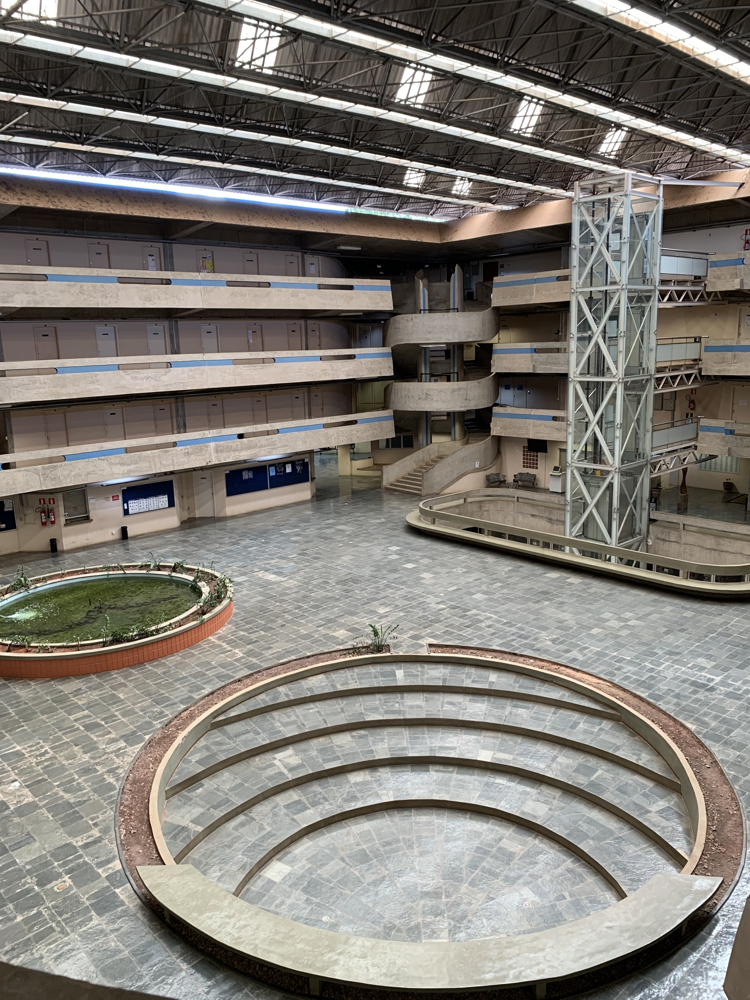

Transformamos dados em
informações
Consultoria estatística de alto nível: análise de dados, modelagem preditiva e aprendizado de máquina para pesquisadores, empresas e organizações, conduzidos por alunos do bacharelado em Estatística supervisionados por docentes do Departamento de Estatística do IMECC/Unicamp.
Rigor estatístico a serviço de quem decide com dados
O EstatCon é o serviço de consultoria estatística do Departamento de Estatística da UNICAMP (IMECC). Funciona através de alunos matriculados nas disciplinas ME712 e ME812 (Consultoria Estatística I e II), sob supervisão direta de professores do departamento.
Atendemos pesquisadores acadêmicos, órgãos públicos e empresas privadas que precisam transformar dados em respostas concretas, com rigor metodológico e supervisão especializada.
- Supervisão por professores do IMECC/UNICAMP
- Serviço inteiramente gratuito para todos os solicitantes
- Relatório técnico ao final do semestre letivo
- Atendimento presencial e virtual
Rigor acadêmico com resultado prático
Três razões para confiar seu projeto ao EstatCon.
Expertise Supervisionada
Cada projeto é conduzido por alunos sob orientação direta de professores do Departamento de Estatística do IMECC/UNICAMP - garantindo rigor metodológico em cada análise.
Serviço Gratuito
Qualquer solicitante - pesquisador, aluno, empresa ou órgão público - tem acesso à consultoria estatística especializada sem nenhum custo.
Relatório Técnico Incluso
Ao final do projeto, você recebe documentação completa com metodologia, resultados e interpretações - pronta para publicação, defesa ou tomada de decisão.
Métodos e Técnicas
Da estatística clássica ao aprendizado de máquina: cobrimos todas as etapas da análise quantitativa.
Modelagem Estatística
Regressão linear e logística, modelos lineares generalizados (GLM), modelos mistos, modelos longitudinais e hierárquicos para estruturas de dados complexas.
Análise Descritiva
Exploração, sumarização e visualização de dados. Estatísticas descritivas e diagnóstico visual completo.
Aprendizado de Máquina
Modelos preditivos supervisionados e não-supervisionados, validação cruzada e seleção de variáveis.
Séries Temporais
ARIMA, decomposição sazonal, análise espectral e previsão de dados ao longo do tempo.
Análise de Variância
ANOVA, MANOVA, delineamentos experimentais e comparações múltiplas para estudos com grupos.
Classificação e Clustering
PCA, análise discriminante, k-means e métodos de redução de dimensionalidade para descoberta de padrões.
Análise de Sobrevivência · Dados Longitudinais
Kaplan-Meier, modelo de Cox, modelos de efeitos mistos e análise de dados repetidos ao longo do tempo.
Como Funciona
Quatro etapas simples do pedido ao relatório final.
Antes de inscrever-se, verifique os pré-requisitos:
- Os dados da pesquisa devem estar completamente coletados antes da submissão do projeto.
- Os dados devem ser disponibilizados à equipe consultora no início do semestre letivo.
- A consultoria se desenvolve ao longo de todo o semestre letivo, com entrega do relatório técnico e apresentação dos resultados ao final do semestre.
Inscrição
Clique no botão "Solicitar Consultoria" e preencha o formulário online descrevendo seu projeto e as perguntas de pesquisa. Os dados devem estar completamente coletados antes da inscrição.
Seleção e Alocação
Os projetos são avaliados pela coordenação. Cada projeto aprovado será alocado a um grupo de alunos, que atuará como consultores, e será supervisionado por um docente do departamento.
Análise e Reuniões
Realize pelo menos duas reuniões obrigatórias ao longo do semestre. As análises são conduzidas com orientação docente e feedbacks contínuos.
Relatório e Apresentação Final
Ao final do semestre letivo, você recebe um relatório técnico completo com resultados, interpretações e recomendações estatísticas aplicadas ao seu projeto.
As inscrições acontecem em junho/julho.
O prazo para submissões para o próximo semestre letivo segue até 25/07/2026.
Diversidade de Projetos
Já atuamos em projetos de pesquisa acadêmica, iniciativa privada e organizações públicas das mais diversas áreas.
Projetos Recentes em Destaque
Ver histórico completo →Análise de marcadores de hemólise e metabolismo do ferro em pacientes pós-COVID-19 (FCM/UNICAMP)
Mapeamento de territórios para bovinocultura de corte no Brasil Central (IG/UNICAMP)
Análise de variáveis climáticas e restauração florestal em bacias hidrográficas (FT/UNICAMP)
Análise hermenêutica da infodemiologia durante a pandemia de COVID-19 (UNESP)
Financeirização, governança corporativa e remuneração de CEOs no Brasil (IE/UNICAMP)
Triagem de compostos neuroprotetores via análise de citotoxicidade celular (IB/UNICAMP)
Nossa Equipe
Coordenado por professores do Departamento de Estatística do IMECC/UNICAMP.
Profa. Dra. Tatiana Benaglia
Professora Coordenadora Estatística · IMECC/UNICAMPProf. Dr. Rafael Pimentel Maia
Professor Coordenador Estatística · IMECC/UNICAMPProf. Dr. Caio Lucidius N. Azevedo
Professor Coordenador Estatística · IMECC/UNICAMPOs consultores são alunos de graduação do bacharelado em Estatística regularmente matriculados nas disciplinas ME712 e ME812 (Consultoria Estatística I e II).
Coordenações Anteriores
- Profa. Dra. Larissa A. Matos
- Prof. Dr. Guilherme Ludwig
- Prof. Dr. Victor Freguglia Souza
- Profa. Dra. Mariana R. Motta
- Profa. Dra. Samara Kiihl
- Prof. Dr. Alex Rodrigo dos Santos Sousa
- Profa. Dra. Larissa A. Matos
- Prof. Dr. Mauricio E. Zevallos Herencia
- Prof. Dr. Rafael Pimentel Maia
Perguntas Frequentes
Tudo o que você precisa saber antes de solicitar uma consultoria.
Quem pode solicitar uma consultoria?
Pesquisadores, docentes, alunos de pós-graduação e graduação da UNICAMP. Instituições externas de ensino, empresas privadas e órgãos públicos também podem ser atendidos, mediante avaliação pela coordenação.
O serviço é realmente gratuito?
Sim. O serviço de consultoria é inteiramente gratuito para todos os solicitantes - pesquisadores, alunos, empresas ou órgãos públicos.
Meu projeto precisa ter os dados já coletados?
Sim. Os dados devem estar coletados e disponíveis para que a consultoria possa ser iniciada. Se ainda estiver na fase de planejamento, considere entrar em contato na próxima janela de inscrições, com os dados já em mãos.
Quanto tempo dura uma consultoria?
Em geral, um semestre letivo. O projeto tem início após a alocação do consultor e termina com a entrega do relatório técnico e a apresentação final. As inscrições acontecem em junho/julho e dezembro/janeiro, para atividades de consultoria no semestre letivo seguinte.
Preciso ter conhecimento de estatística?
Não. O consultor explicará cada etapa e a metodologia de forma acessível ao seu nível de conhecimento. O objetivo é que você compreenda e possa utilizar os resultados com segurança.
Como será feita a comunicação com o consultor?
Por e-mail e reuniões presenciais ou virtuais. São obrigatórias ao menos duas reuniões ao longo do semestre, com acompanhamento contínuo pelo professor supervisor.
Recebo algum documento ao final?
Sim. Ao encerrar o projeto, você recebe um relatório técnico completo com metodologia, resultados, interpretações e recomendações - pronto para subsidiar publicações, defesas ou decisões gerenciais. Adicionalmente, os consultores farão uma apresentação dos resultados obtidos ao cliente.
Solicite uma Consultoria
Entre em contato para saber mais sobre o processo de inscrição ou tirar dúvidas sobre nossos serviços.
-
E-mail estatcon@unicamp.br
-
Endereço Rua Sérgio Buarque de Holanda, 651
Cidade Universitária · Campinas/SP
CEP 13083-859 -
Inscrições Abertas no início de cada semestre letivo. Acompanhe os prazos pelo site e e-mail.
